Diseño y fabricación de una mesa multifuncional
Proyecto de mobiliario multifuncional
Desarrollo de una propuesta de mobiliario compacto, desmontable y personalizable, que integra diseño digital, fabricación láser e impresión UV.
01. Introducción
Como parte del desarrollo del proyecto, se propone el diseño y fabricación de una mesa multifuncional dirigida a jóvenes nómadas digitales y usuarios de departamentos de alquiler mediante plataformas como Airbnb.
La propuesta busca aprovechar los espacios reducidos mediante un mobiliario compacto, desmontable y fácil de transportar, que permita realizar diferentes actividades, como comer, trabajar y disfrutar de juegos de mesa.
El proyecto integra herramientas de diseño digital y fabricación, combinando el modelado 3D, el corte láser y la impresión UV para obtener un producto personalizado, funcional y estéticamente atractivo.
02. Concepto del producto
Se plantea el diseño de una mesa circular para cuatro personas, con una estructura inferior formada por elementos curvos que se entrecruzan para proporcionar soporte y estabilidad.
Características principales
- Multifuncionalidad: permite utilizar la superficie como mesa de comedor, espacio de trabajo y tablero de juegos.
- Diseño desmontable: sus componentes están pensados para ensamblarse mediante encajes, sin necesidad de tornillos ni adhesivos.
- Personalización: incorpora un diseño de ajedrez mediante impresión UV sobre el tablero, convirtiendo la mesa en un espacio recreativo.
Además, se busca que sus componentes ocupen poco espacio y puedan almacenarse de manera compacta, facilitando su transporte y reduciendo las necesidades de almacenamiento.
03. Dimensiones y escala
El diseño se desarrolla considerando una escala de 0,25 respecto a sus dimensiones originales.
| Característica | Medida real | Medida de maqueta |
|---|---|---|
| Diámetro del tablero | 100 cm | 25 cm |
| Altura total | 75 cm | 18,75 cm |
Para la fabricación del prototipo se dispone de una plancha de MDF de 30 × 60 cm, con un espesor de 4 mm.
04. Diseño y modelado digital
El proceso de diseño se desarrolló utilizando los programas Fusion 360 y AutoCAD, herramientas que permitieron trabajar en la geometría del producto, definir sus componentes y preparar los archivos necesarios para la fabricación.
Inicialmente, se realizó un boceto conceptual para establecer la forma circular del tablero y la estructura inferior curva. Posteriormente, se desarrollaron los modelos digitales, considerando las dimensiones a escala, la distribución de las piezas y los sistemas de encaje.
Bocetos iniciales
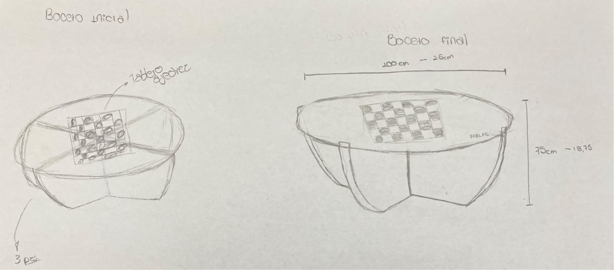
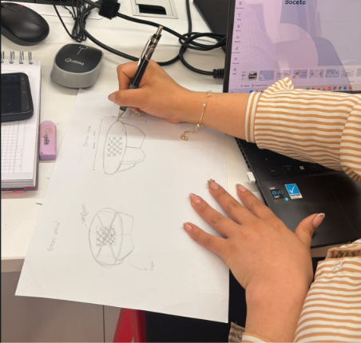
Modelado en herramientas digitales
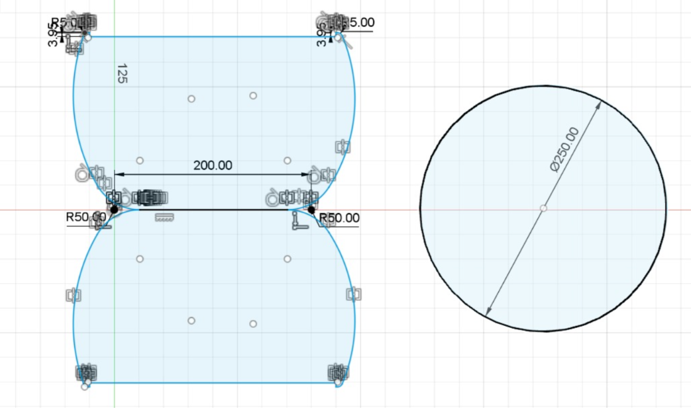
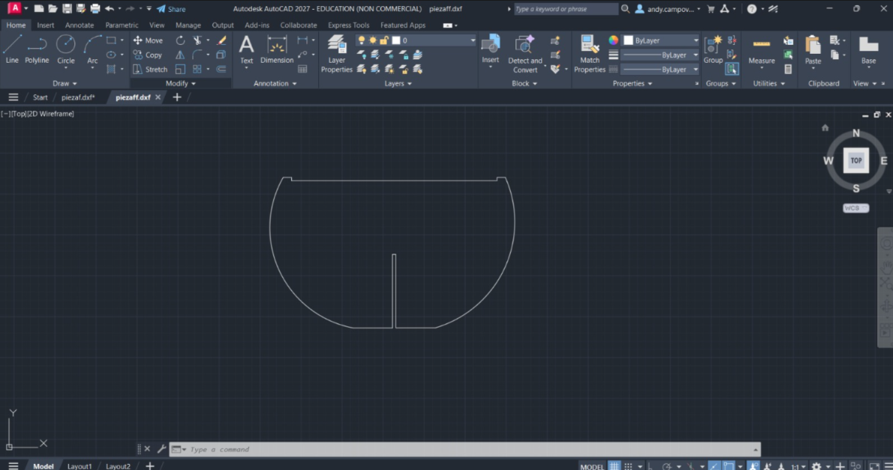
El uso de estas herramientas permitió visualizar el producto antes de su fabricación y realizar los ajustes necesarios para preparar los componentes destinados al corte láser.
05. Personalización mediante impresión UV
Uno de los elementos diferenciadores del proyecto es la incorporación de un diseño de ajedrez sobre la superficie del tablero mediante impresión UV.
Esta propuesta permite ampliar las funciones de la mesa, ya que además de utilizarse para comer o trabajar, ofrece un espacio para actividades recreativas.
El diseño gráfico se preparó considerando las dimensiones del tablero circular y su distribución superficial. La impresión UV aporta un acabado personalizado al producto y permite integrar el diseño gráfico con la fabricación del mobiliario.
06. Materiales y proceso de fabricación
El material seleccionado para la elaboración del prototipo es MDF de 4 mm de espesor, utilizando una plancha de 30 × 60 cm.
Para el desarrollo del producto se emplearon herramientas de diseño digital y fabricación, siguiendo las siguientes etapas:
- Elaboración del boceto conceptual.
- Definición de las dimensiones y la escala.
- Modelado de las piezas en Fusion 360.
- Desarrollo y preparación de los archivos en AutoCAD.
- Revisión del kerf para ajustar los encajes.
- Preparación y ejecución del corte láser.
- Preparación del diseño gráfico del tablero.
- Impresión UV del diseño de ajedrez.
- Ensamblaje de los componentes y evaluación del producto.
Registro del desarrollo
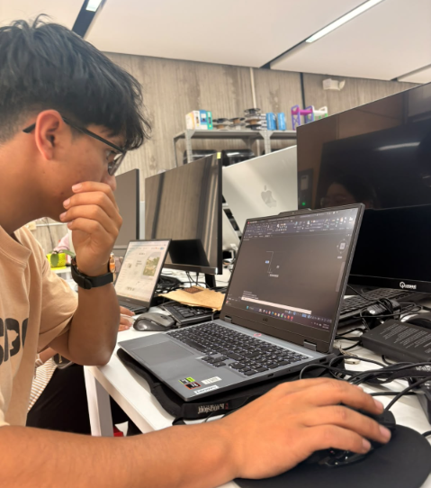
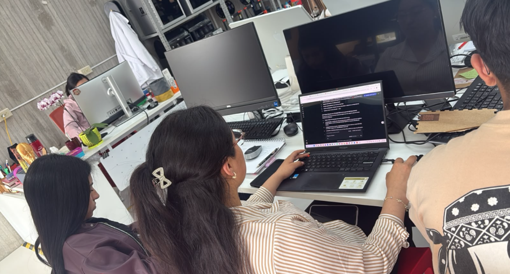
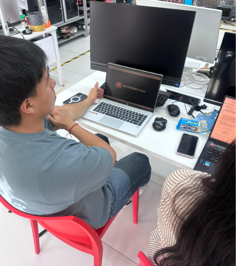
Proceso de armado
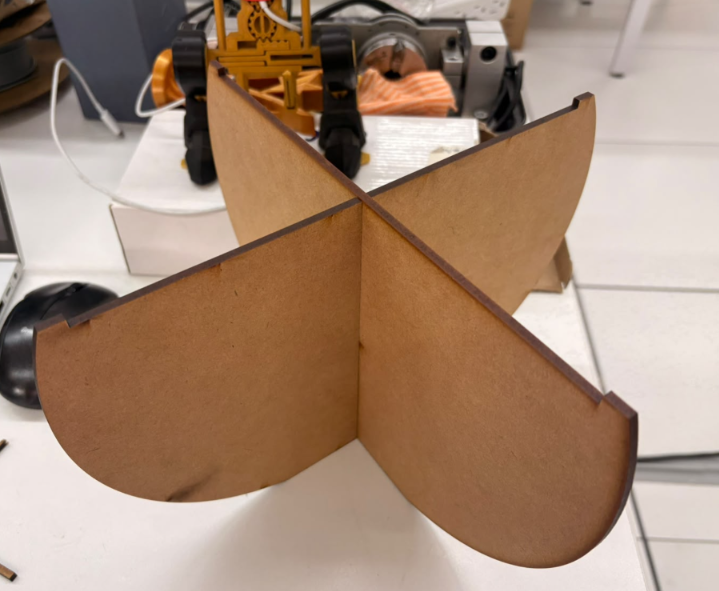
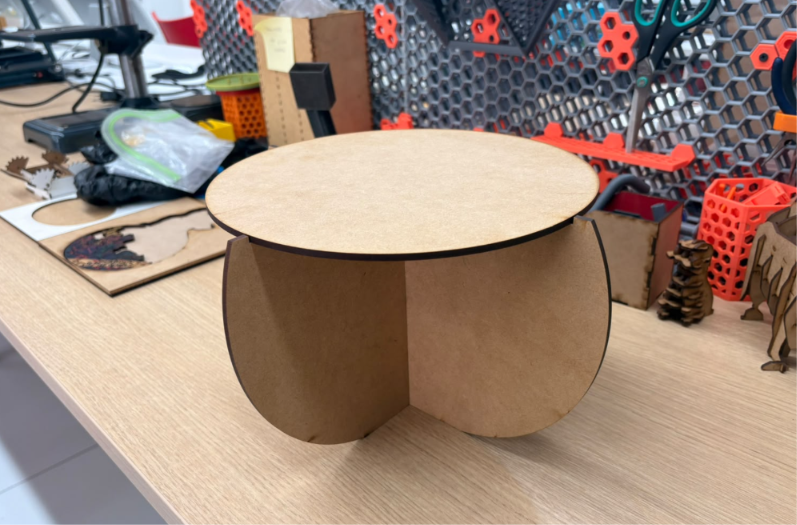
Manual de ensamble
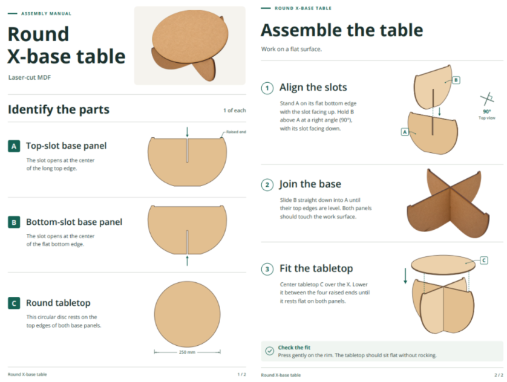
07. Organización y distribución del trabajo
El desarrollo del proyecto se realizó mediante el trabajo colaborativo de cuatro integrantes, distribuyendo las actividades de acuerdo con las diferentes etapas del proceso.
Michelle Idrovo
- Elaboración del boceto inicial.
- Definición de las dimensiones y medidas a escala.
- Participación en el proceso de impresión UV.
- Elaboración de la pestaña dentro de la página web.
Denisse Inga
- Diseño del tablero.
- Preparación y participación en la impresión UV.
- Elaboración del video del proceso.
- Organización y desarrollo de la documentación del proyecto.
Andy Campoverde
- Desarrollo del modelado en Fusion 360 y AutoCAD junto con David.
- Revisión del kerf y ajustes necesarios para los encajes.
- Preparación y ejecución del corte láser.
David Dalgo
- Desarrollo del modelado en Fusion 360 y AutoCAD junto con Andy.
- Revisión del kerf y ajustes necesarios para los encajes.
- Preparación y ejecución del corte láser.
La distribución de actividades permitió trabajar de manera organizada, integrando las habilidades de cada integrante en las etapas de diseño, personalización, modelado y fabricación.
08. Criterios de desarrollo del producto
- Diseño innovador: creación de una propuesta propia con una estructura curva y una superficie multifuncional.
- Impresión UV: incorporación de un diseño personalizado de ajedrez sobre el tablero.
- Aprovechamiento del espacio: desarrollo de componentes desmontables y apilables para facilitar su almacenamiento.
- Ensamblaje: utilización de un sistema de encajes que permita unir las piezas sin tornillos ni adhesivos.
- Estabilidad: búsqueda de una estructura firme, con elementos correctamente conectados.
- Documentación digital: recopilación del proceso de diseño y fabricación en el HUB del equipo, incluyendo evidencias y archivos descargables.
09. Conclusiones
El desarrollo de este proyecto permitió aplicar conocimientos de diseño y fabricación digital en la creación de una propuesta de mobiliario multifuncional.
La combinación de Fusion 360, AutoCAD, corte láser e impresión UV permitió integrar diferentes procesos tecnológicos en el desarrollo de un mismo producto.
Asimismo, el trabajo colaborativo facilitó la distribución de responsabilidades y la participación de los cuatro integrantes en las distintas etapas del proyecto.
La propuesta busca ofrecer una alternativa de mobiliario compacta, personalizable y funcional, adaptada a las necesidades de usuarios que requieren aprovechar mejor los espacios disponibles.
10. Registro audiovisual del proyecto
Como parte de la documentación del proyecto, se elaboró un video que recopila diferentes momentos del proceso de diseño, desarrollo y fabricación de la mesa multifuncional.
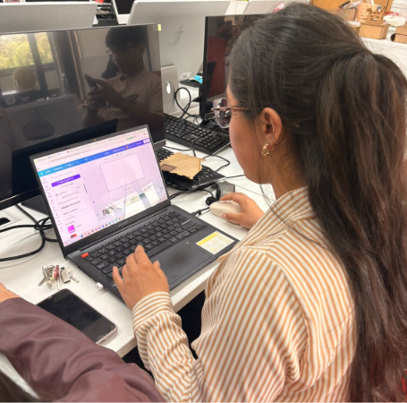
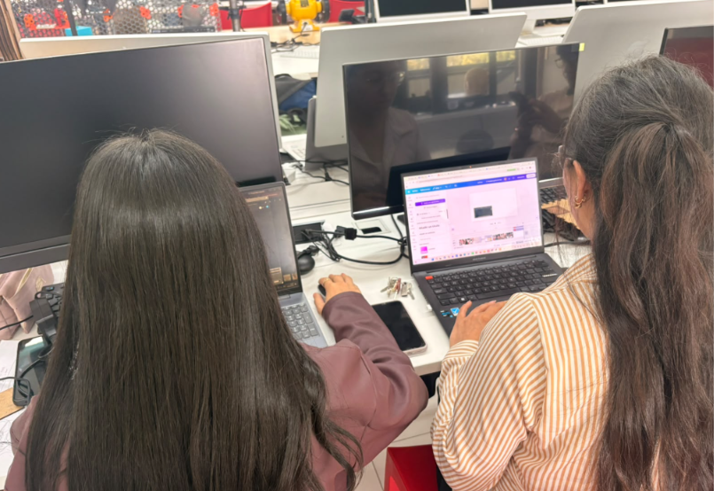
Video del proceso de diseño y fabricación de la mesa multifuncional.
11. Resultado final del producto
A continuación, se presenta el resultado final de la mesa multifuncional, integrando el diseño de la estructura, el tablero personalizado y los procesos de fabricación desarrollados durante el proyecto.
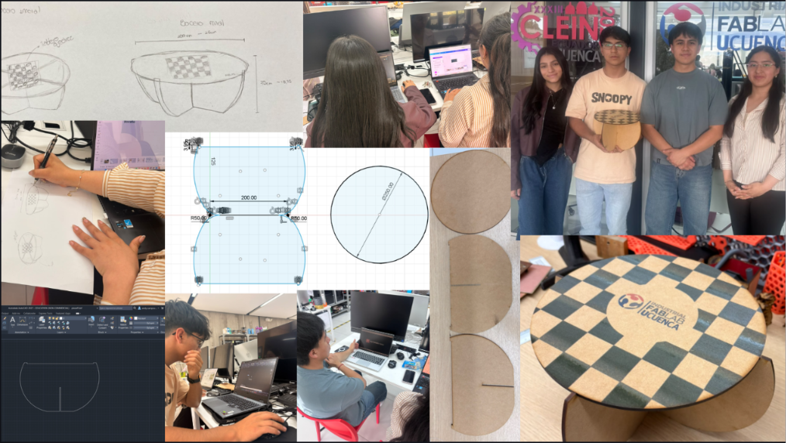
Documentación y archivos del proyecto
Se adjuntan los archivos digitales, imágenes y evidencias correspondientes al proceso de diseño, modelado y fabricación, como respaldo del trabajo realizado por los integrantes del equipo.
Modelo digital en AutoCAD
Archivo editable del diseño de la mesa multifuncional.
Formato: .dwg